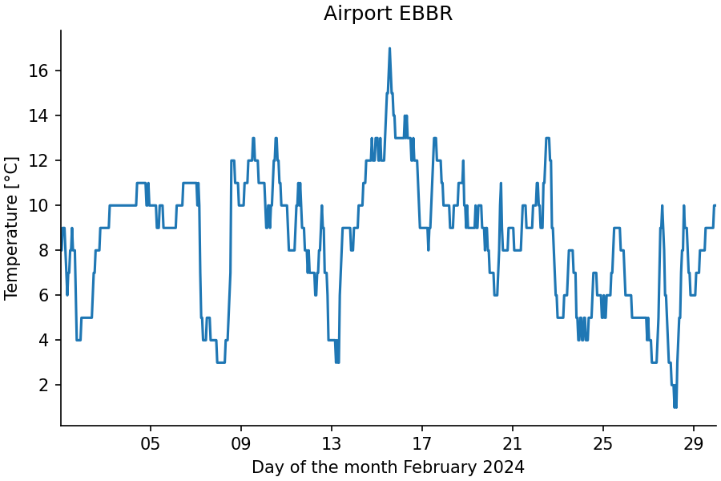
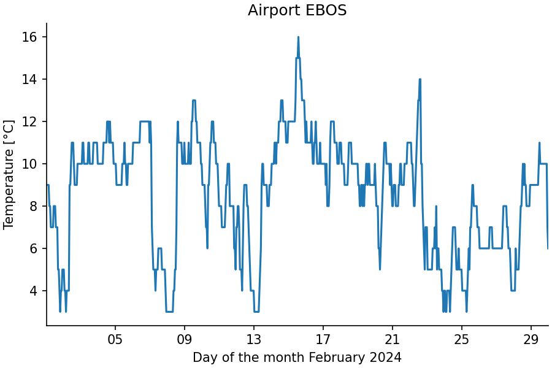

Script (Multiple Cases)¶
In the previous tutorial, the script protocol and driver were illustrated with a single use case of a script. The script protocol also supports scripts that can be executed with different combinations of inputs.
Multiple Cases Script Driver¶
A Python script using the script protocol for multiple cases has the following structure.
#!/usr/bin/env python3
from stepup.core.script import driver
def cases():
yield 1
yield 2
CASE_FMT = "foo{}"
def case_info(case: int):
return {
"inp": ..., # a single input path or a list of input paths
"out": ..., # a single output path or a list of input paths
"static": ..., # declare a static file or a list of static files
"stdout": ..., # redirect the standard output to a file (StepUp 1.3.0)
"stderr": ..., # redirect the standard error to a file (StepUp 1.3.0)
"just_any": "argument that you want to add",
}
def run(inp, out, just_any):
...
if __name__ == "__main__":
driver()
The script has the following elements:
-
The generator
cases()takes no arguments and yields cases that correspond to different ways of running the script. Here, the cases are simple integers1and2, but richer data are also supported. Theiteminyield itemis translated into anargslist and akwargsdictionary as follows:- If
itemis a dictionary:args = []; kwargs = item - Else if
itemis a tuple of a list and a dictionary:args, kwargs = item - Else if
itemis a list or tuple:args = list(item); kwargs = {} - Else:
args = [item]; kwargs = {}
- If
-
The cases will be represented by a string argument on the command line formatted with
CASE_FMT.format(*args, **kwargs), whereargsandkwargsare derived from the iterates from thecases()generator. The formatted string must retain all information ofargsandkwargs, so that they can be derived again from the formatted string with the parse library.- Here, the two string representations will be
foo1andfoo2. - The corresponding steps will be
./script.py run foo1and./script.py run foo2
- Here, the two string representations will be
-
The function
case_info()is used to translateargsandkwargsinto a more detailed planning of the run steps. The returned dictionary is handled in the same way as that of theinfo()function in the previous tutorial Script (Single Case). -
The function
run()works in the same way as for the single case script driver.
Example¶
Example source files: docs/getting_started/script_multiple/
To make the example more engaging, it leverages NumPy and Matplotlib. The same plotting function is applied to two datasets of hourly temperatures recorded at the airports of Brussels and Ostend in February 2024, downloaded from the ASOS network hosted by Iowa State University.
Create a script plan.py that just calls the plotting script:
#!/usr/bin/env python3
from stepup.core.api import script, static
static("plot.py", "ebbr.csv", "ebos.csv", "matplotlibrc")
script("plot.py")
The script plot.py uses the script driver with multiple cases:
#!/usr/bin/env python3
import matplotlib as mpl
import matplotlib.pyplot as plt
import numpy as np
from matplotlib.dates import DateFormatter
from stepup.core.script import driver
def cases():
yield "ebbr"
yield "ebos"
CASE_FMT = "plot_{}"
def case_info(airport):
return {
"inp": ["matplotlibrc", f"{airport}.csv"],
"out": f"plot_{airport}.png",
"airport": airport,
}
def run(inp, out, airport):
mpl.rc_file(inp[0])
dtype = [("dt", "datetime64[s]"), ("tmpc", "f8")]
data = np.loadtxt(inp[1], dtype=dtype, delimiter=",", skiprows=1).T
fig, ax = plt.subplots()
ax.plot(data["dt"], data["tmpc"])
ax.xaxis.set_major_formatter(DateFormatter("%d"))
ax.set_xlabel("Day of the month February 2024")
ax.set_xlim(data["dt"][0], data["dt"][-1])
ax.set_ylabel("Temperature [°C]")
ax.set_title(f"Airport {airport.upper()}")
fig.savefig(out)
if __name__ == "__main__":
driver()
Make the scripts executable and run StepUp to get the results:
You should see the following terminal output with the plan and run steps of the plotting script:
DIRECTOR │ Listening on /tmp/stepup-########/director (StepUp 2.0.4)
STARTUP │ (Re)initialized boot script
DIRECTOR │ Launched worker 0
PHASE │ run
START │ ./plan.py
SUCCESS │ ./plan.py
START │ ./plot.py plan
SUCCESS │ ./plot.py plan
START │ ./plot.py run -- plot_ebbr
SUCCESS │ ./plot.py run -- plot_ebbr
START │ ./plot.py run -- plot_ebos
SUCCESS │ ./plot.py run -- plot_ebos
DIRECTOR │ Trying to delete 0 outdated output(s).
DIRECTOR │ Stopping workers.
DIRECTOR │ See you!
This produces the following figures:
 
Try the Following¶
-
Download temperature data for the same month of an airport close to your home and format it similarly to the
*.csvalready present. Extend thecases()generator to also process your temperature data. -
It is common for iterates of
cases()to be reused by multiple scripts. One way to centralize this information is by defining a listairportsin asettings.pymodule. By locally importing this module in thecases()function, the driver will makesettings.pyan input only of the planning step of the script: -
For debugging purposes, it is sometimes useful to run just a single case of a script. To facilitate this type of debugging, the script can be called with the
casesargument. When you run the following command:you will get a list of different ways to execute the script’s
run()function: